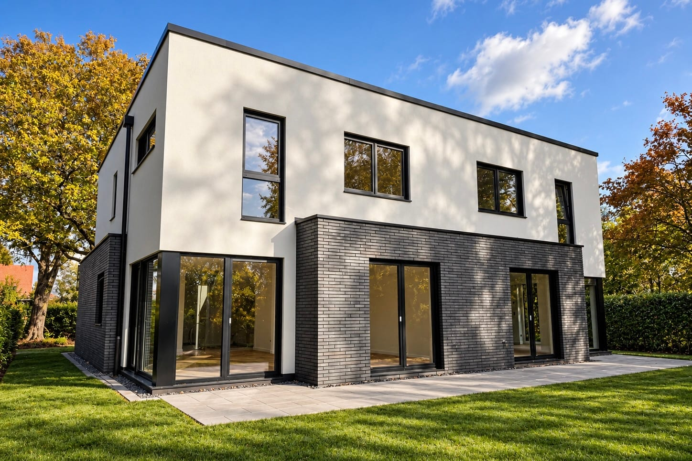
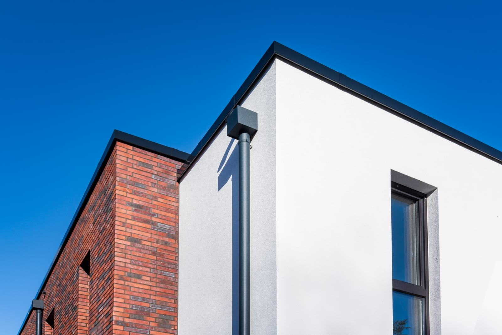

Aktuelles Angebot · Hamburg-Schnelsen
Vogt-Bornkast-Weg 6.
Ihr Zuhause in Schnelsen.
Zwei moderne Doppelhäuser. Vier Wohneinheiten mit eigenem Garten und Terrasse. Fertiggestellt und bezugsfertig.
- Wohneinheiten
- 4
- Zimmer je Haus
- 5
- Wohn-/Nutzfläche je Einheit
- ca. 134 m²

Einblicke in unsere Arbeit
Qualität zeigt sich
im Detail.
Das Zusammenspiel von Materialien, klaren Linien und großzügigen Fensterflächen prägt unsere Projekte. Entdecken Sie realisierte Häuser und die Details ihrer Architektur.
Referenzen